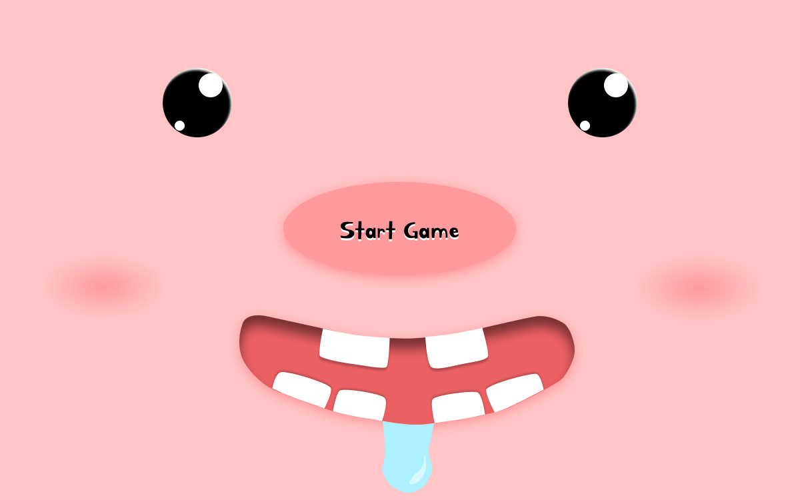
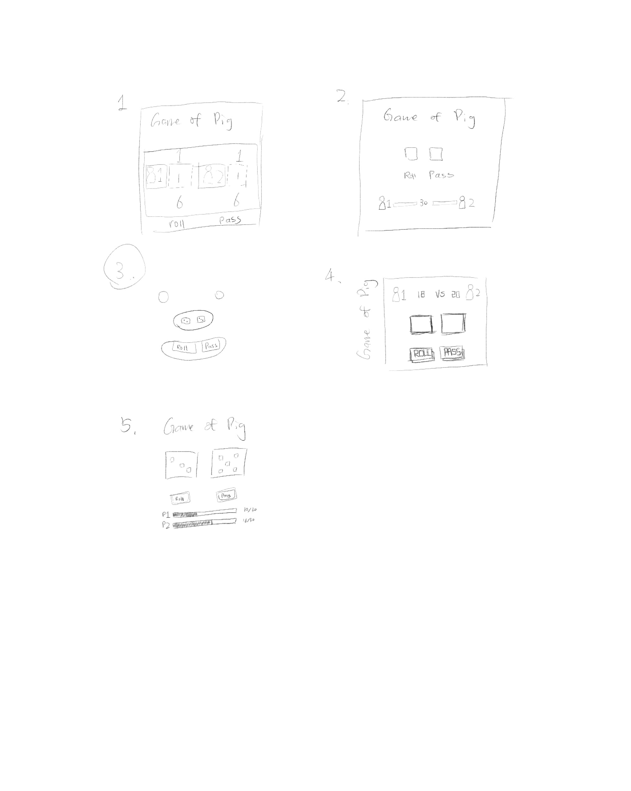
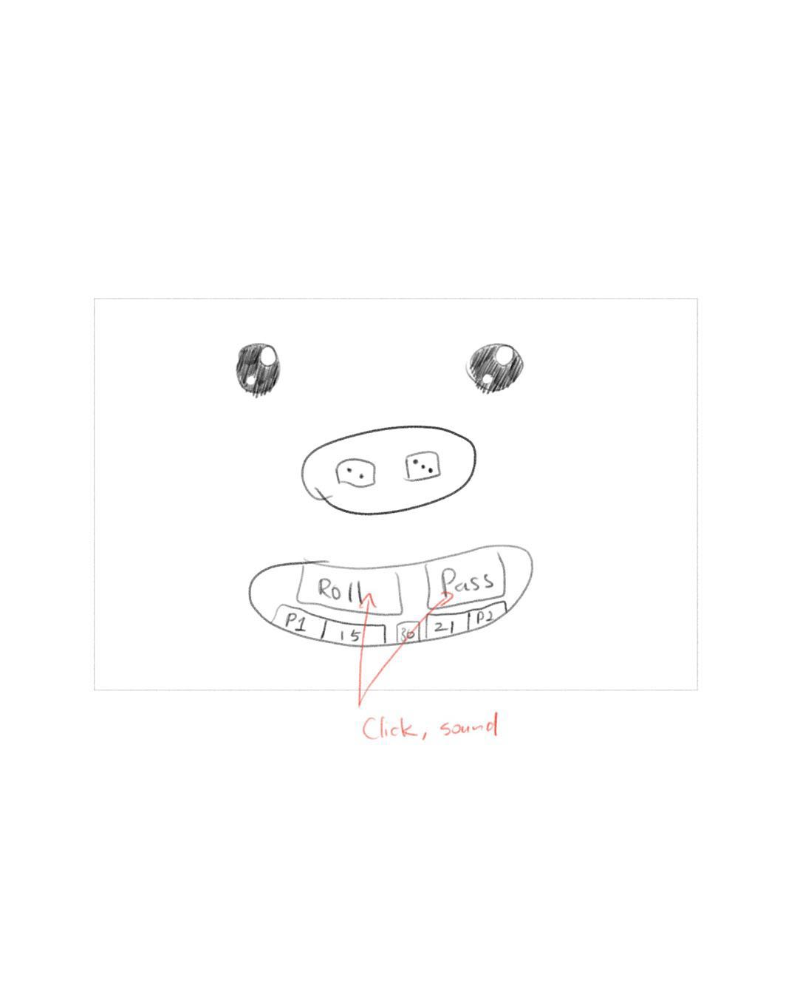
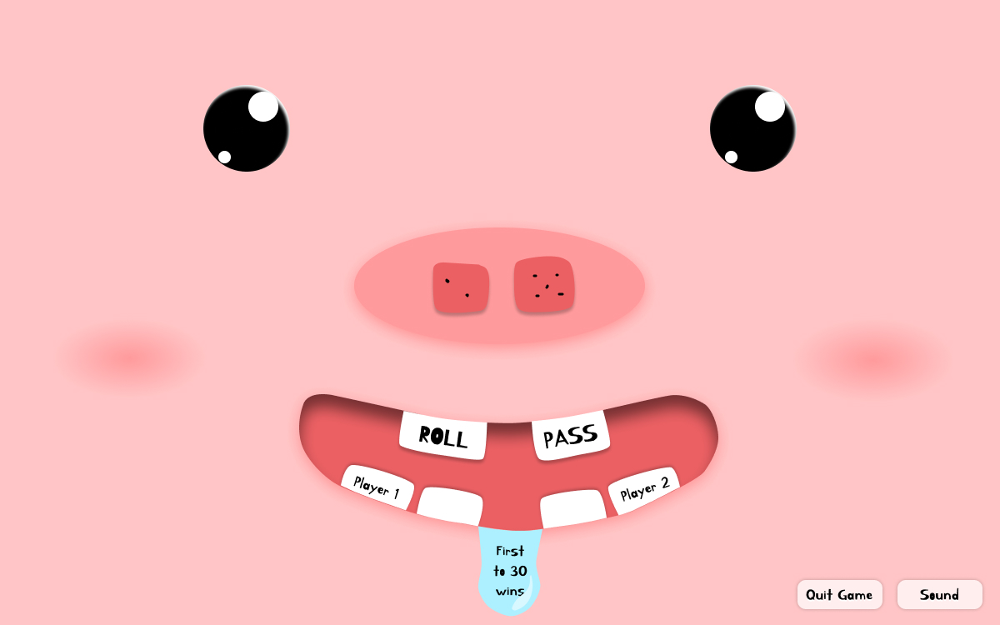

The Game of Pig
A two-player browser dice game where rolling ones can ruin everything. Built entirely with HTML, CSS, and vanilla JavaScript — and wrapped in a playful pig face UI where every game element lives inside a nose, a mouth, or a pair of eyes.

Overview
The Game
The Game of Pig is a classic two-player dice game. Players take turns rolling two dice to accumulate points, but any roll that shows a 1 ends your turn immediately — and rolling double ones (Snake Eyes) wipes out your entire score. The first player to reach 30 points wins.
The twist in this version: the entire interface is a pig face. The dice live inside the pig's snout, the ROLL and PASS buttons are its upper teeth, the player scores are the lower teeth, and a drool drop shows the winning target. The face reacts to the game state — hiding or revealing its features as you move from the start screen into play.
How to Play
-
1
Start — Press Start Game. A random player is chosen to go first.
-
2
Roll — Both dice roll. If neither shows a 1, the sum is added to your score.
-
3
Pass — Lock in your current points and hand the turn to your opponent.
-
4
Roll a 1 — Your turn ends. No points gained this round.
-
5
Snake Eyes — Both dice show 1. You lose all your accumulated points.
-
6
Win — First player to reach 30 points wins.
Game Mechanics
Roll
Roll two dice. Sum is added to the active player's score — as long as neither die shows a 1.
Pass
End your turn voluntarily to lock in your points. A safe move when you're ahead.
Roll a 1
If either die lands on 1, your turn ends immediately. No points scored this round.
Snake Eyes
Both dice show 1. You lose every point you've earned. Total reset — be careful.
First to 30
Reach 30 points before your opponent to win. A win sound plays and the game locks.
Design Process
The visual design went through three stages before a single line of code was written: thumbnail sketches to explore concepts, a refined detail sketch to nail the interaction model, and digital comps to finalize both game states.
Thumbnail Sketches
Five quick layout concepts explored different ways to organize two players, two dice, and the action buttons. Options ranged from score bars on a progress line, to stacked layouts, to the pig-face concept that made the game elements part of a character.

Chosen Concept & Detail Sketch
The pig-face layout was selected and developed into a more detailed sketch. The dice sit in the snout, ROLL and PASS become the upper teeth, player scores become the lower teeth, and a note — "Click, sound" — flagged that button feedback and audio were part of the design from the start.

Digital Comps
Two states were comped digitally: the start screen (nose = "Start Game" button, mouth showing 4 empty teeth) and the in-game screen (nose = dice, upper teeth = ROLL/PASS, lower teeth = player scores, drool = "First to 30 wins"). These became the spec for the HTML/CSS implementation.

Technical Implementation
The game is written in vanilla JavaScript — no libraries or frameworks. Six key patterns make the implementation clean and reliable.
IIFE Pattern
The entire game is wrapped in an Immediately Invoked Function Expression — keeping all variables and functions out of global scope.
State Object
A single gameData object holds all state: dice
values, player scores, current turn index, and the winning
threshold.
Web Audio API
Button click sounds and a win fanfare play via the
Audio constructor. A mute toggle and opacity feedback
give users full control.
Event-Driven Logic
Each action — start, roll, pass, quit, restart, mute — is a discrete event listener attached to its own handler function. No tangled conditionals.
Progressive Disclosure
UI elements are hidden on load and revealed by JavaScript as the game progresses through states: idle → playing → winner. The pig face "comes alive."
SVG Assets
All face elements — dice faces, the nose, mouth, teeth, blush marks — are SVGs. They scale perfectly at any viewport size with no quality loss.
Play the Game
The game is live on GitHub Pages. Works in any modern browser — no install needed.
Play Now →